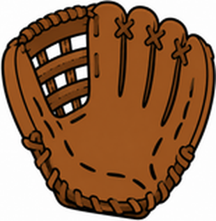
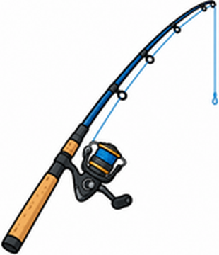

Unit 1 The Great Outdoors — 第二回｜運動用品 Let's Learn
班級：______ 座號：____ 姓名：__________ 分數：______ / 100一、聽力測驗
老師會播放每題的錄音，請仔細聽，選出正確答案。
1. What does he have?
(A) a helmet and a skateboard (B) a bucket and a fishing rod (C) a bat and a mitt (D) a tennis ball and a racket
2. What is the speaker going to do?
(A) go fishing (B) play baseball (C) play tennis (D) go skateboarding
3. What does B have?
(A) a tent and a flashlight (B) a bat and a mitt (C) a skateboard and a helmet (D) a racket and a ball
4. What do they have?
(A) buckets (B) tennis rackets (C) bats (D) fishing rods
5. What is B going to do?
(A) go skateboarding (B) play tennis with A (C) go fishing (D) play video games
二、是非題
閱讀短文，判斷句子是 True（對）或 False（錯）。
Anna and Ben are going to the park after school. Anna is going to go skateboarding. She has a skateboard and a helmet. Ben is going to play baseball. He has a bat, but he doesn't have a mitt. Anna is going to lend him one.
6. Anna is going to play baseball. （ T ／ F ）
7. Anna has a helmet. （ T ／ F ）
8. Ben has a bat. （ T ／ F ）
9. Ben has a mitt. （ T ／ F ）
10. They are going to the beach. （ T ／ F ）
三、選擇題
選出最適合的答案。
11. A mitt is for ____.
(A) fishing (B) tennis (C) skateboarding (D) baseball
12. What's he going to do? He's going to ____.
(A) play baseball (B) playing baseball (C) go baseball (D) plays baseball
13. You need a ____ to catch a fish.
(A) helmet (B) racket (C) bat (D) fishing rod
14. A helmet protects your ____.
(A) eye (B) foot (C) head (D) hand
15. He ____ a tennis ball and a tennis racket.
(A) has (B) are (C) have (D) is
16. What is this? 這是什麼？

(A) a bat (B) a mitt (C) a bucket (D) a helmet
17. What is this? 這是什麼？

(A) a skateboard (B) a tennis racket (C) a fishing rod (D) a bat
四、文法測驗
選出文法正確的答案。
18. I ____ going to go fishing.
(A) am (B) be (C) is (D) are
19. What ____ you going to do?
(A) am (B) does (C) are (D) is
20. He ____ a bat and a mitt.
(A) have (B) do (C) are (D) has
21. ___ you going to play tennis with Gus?
(A) Is (B) Does (C) Are (D) Am
22. I'm going to go ____ after school.
(A) skateboarding (B) skateboards (C) to skateboard (D) skateboard
五、配合題
左邊的題目要配右邊哪一個？用下拉選單選出代號。
(A) 棒球手套
(B) 安全帽
(C) 釣竿
(D) 球棒
(E) 水桶
23. a mitt （ ）
24. a bat （ ）
25. a helmet （ ）
26. a fishing rod （ ）
27. a bucket （ ）
六、句子改寫
依照提示改寫句子，直接輸入完整句子（注意大小寫與標點可忽略）。
28. （改成疑問句）You are going to play tennis today.
29. （改成否定句）I'm going to go skateboarding.
30. （主詞改成 She）I have a skateboard and a helmet.
31. （改成疑問句）He has a bat.
32. （改成否定句）We're going to play baseball.
七、句子重組
依序點選單字，排成正確的句子。
33. going ／ What ／ are ／ you ／ to ／ do?
34. baseball. ／ going ／ play ／ to ／ He's
35. a ／ a ／ bat ／ has ／ He ／ and ／ mitt.
36. fishing. ／ I'm ／ going ／ go ／ to
37. and ／ I ／ helmet. ／ skateboard ／ a ／ have ／ a